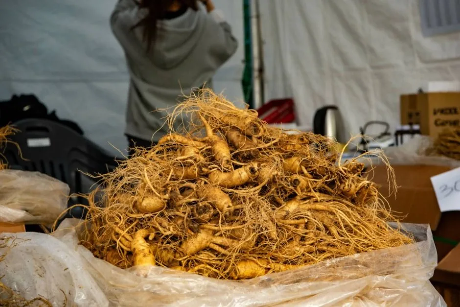
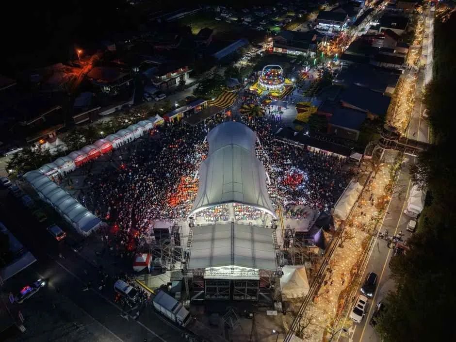
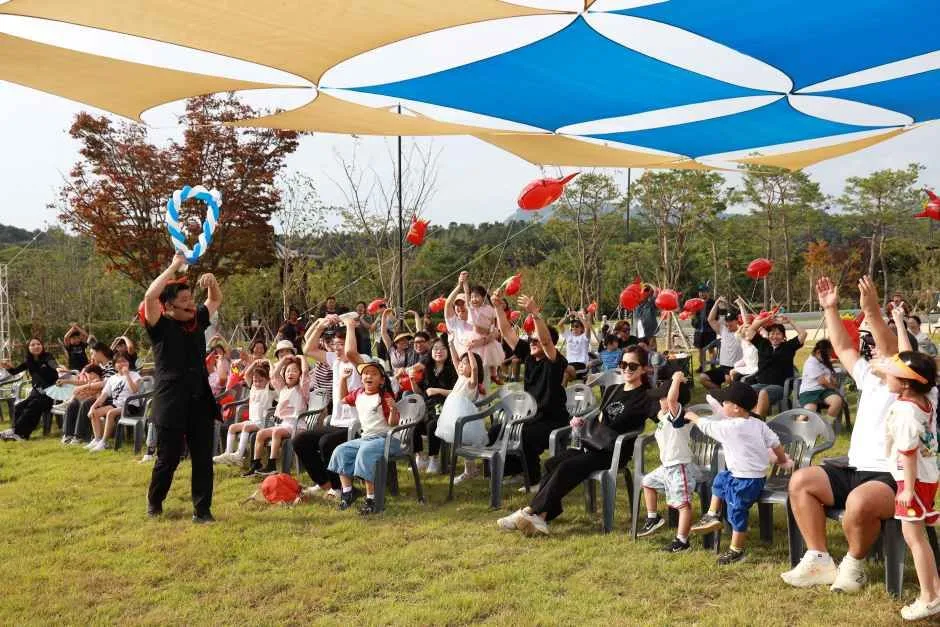
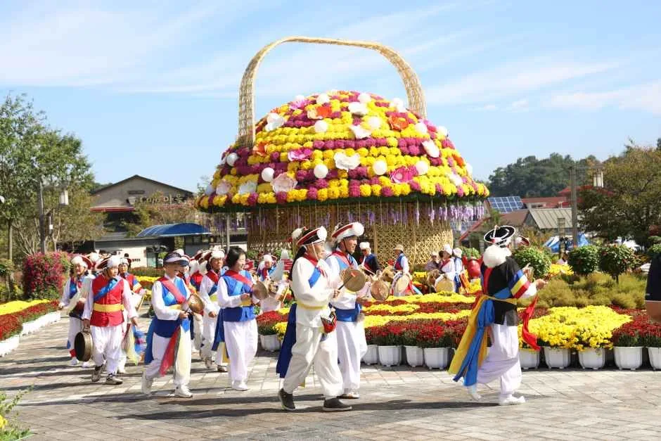
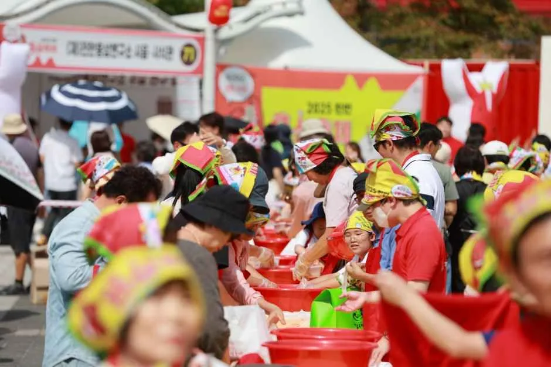
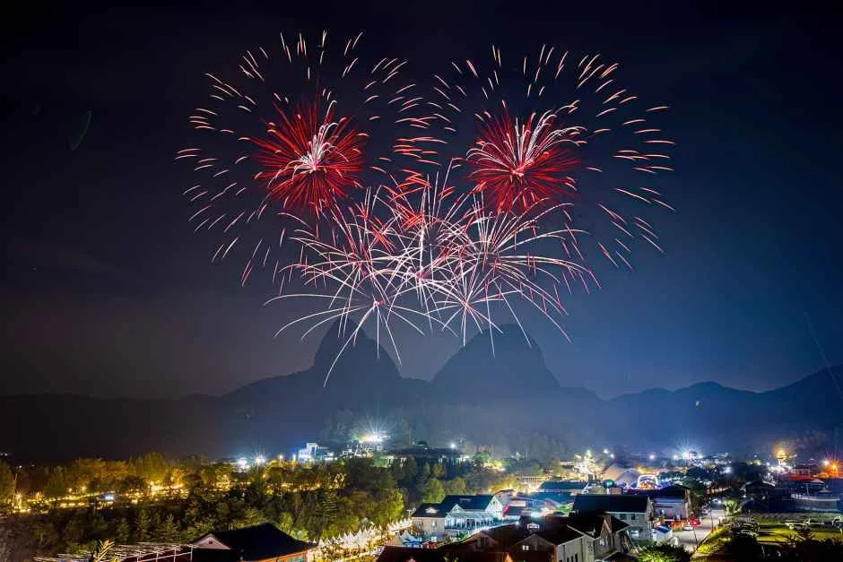

▲ 갓 수확한 진안 수삼. 국내 유일 고원지대인 진안고원의 서늘한 기후와 마이산 자락이 홍삼 재배에 최적의 조건을 만든다 ⓒ 대한민국 구석구석(한국관광공사)

▲ 드론으로 내려다본 진안홍삼축제 야간 행사장. 마이산 북부 일원에 대규모 천막과 부스가 들어선다 ⓒ 대한민국 구석구석(한국관광공사)
'홍삼의 매력에 삼며들다!'를 슬로건으로 내건 2026 진안홍삼축제가 9월 18일부터 20일까지 사흘간 전북특별자치도 진안군 마이산 북부 일원에서 열린다. 하루 앞선 9월 17일에는 진안읍 천변에서 축제 개막을 알리는 전야제가 먼저 열리며, 이곳에서는 이번 축제의 새로운 시도인 '홍삼빛 낙화놀이'가 처음 선보인다.
1. 국내 유일 고원지대가 키운 홍삼

▲ 파라솔 아래 마련된 야외 관람석. 마이산을 배경으로 각종 공연과 체험이 이어진다 ⓒ 대한민국 구석구석(한국관광공사)
진안군이 자리한 진안고원은 국내에서 유일한 고원지대로 꼽힌다. 마이산의 정기를 품은 이 고원 지형은 일교차와 계절별 기온차가 뚜렷하고 주변 지역보다 서늘한 기후를 갖춰, 인삼 재배에 유리한 조건을 만든다. 여름철 30도 이상 기온이 이어지는 기간이 30일 이내로 짧고, 산지를 새로 개척한 초작지 재배가 많아 병충해도 상대적으로 적다는 것이 지역 설명이다. 이런 환경에서 자란 진안 인삼은 사포닌과 진세노사이드 성분을 다량 함유해, 홍삼 가공용으로는 최상급 품질을 인정받고 있다.
2. 전야제부터 본 행사까지 — 나흘의 일정

▲ 대형 홍삼 바구니 조형물과 풍물단 행렬. 마이산 자락을 배경으로 한 축제장의 상징적인 장면이다 ⓒ 대한민국 구석구석(한국관광공사)
축제는 9월 17일 진안읍 천변에서 열리는 전야제로 문을 연다. 이날 처음 선보이는 '홍삼빛 낙화놀이'는 전통 낙화놀이에 축제 테마를 접목한 프로그램으로, 본 행사 전날 밤 분위기를 미리 끌어올린다. 이어 9월 18일부터 20일까지 사흘간 마이산 북부 일원에서 본 행사가 이어지며, 낮에는 체험·판매 부스, 저녁에는 무대 공연이 중심이 된다. 공연 라인업으로는 어린이 동반 가족을 겨냥한 티니핑 싱어롱쇼, 흥을 돋우는 홍삼에너지 랜덤 플레이댄스, 35사단 군악대 공연 등이 예정돼 있다.
▲ 거리에서 펼쳐지는 '홍삼에너지 랜덤 플레이댄스'. 세대와 관계없이 함께 참여할 수 있는 주말 인기 프로그램이다 ⓒ 대한민국 구석구석(한국관광공사)
| 날짜 | 장소 | 주요 내용 |
|---|---|---|
| 9/17(목) | 진안읍 천변 | 전야제, 홍삼빛 낙화놀이(신규) |
| 9/18(금) | 마이산 북부 일원 | 축제 개막, 체험·판매 부스 운영 시작 |
| 9/19(토) | 마이산 북부 일원 | 티니핑 싱어롱쇼, 홍삼에너지 랜덤 플레이댄스 등 주말 공연 |
| 9/20(일) | 마이산 북부 일원 | 35사단 군악대 공연, 폐막 |
3. 홍삼 담그고, 먹고, 배우고 — 체험 프로그램
▲ 아이들이 참여하는 체험 부스. 진안홍삼축제는 홍삼 테마 프로그램과 함께 세대별 놀거리도 폭넓게 갖췄다 ⓒ 대한민국 구석구석(한국관광공사)
이번 축제에서만 즐길 수 있는 대표 프로그램으로는 산골愛홍삼한상, 홍삼깍두기 담그GO 나누GO, 홍삼명인교실이 꼽힌다. 여기에 홍삼바비큐존, 홍삼스파&홍삼한상, 홍삼파워존, 진안홍삼빙고 등 온 가족이 함께 참여할 수 있는 체험형 콘텐츠가 더해진다. 홍삼을 활용한 깍두기 담그기, 바비큐, 떡볶이 나눔 같은 먹거리 프로그램은 물론, 마을축제조직위원회가 운영하는 체험 부스와 전통 놀이도 별도로 마련돼 세대별 맞춤형 즐길 거리를 갖췄다.
4. 홍삼 사 올 때 확인할 것

▲ 축제 체험 부스에서 게임에 참여하는 방문객들. 체험 부스 곳곳에서 홍삼을 주제로 한 이벤트가 함께 진행된다 ⓒ 대한민국 구석구석(한국관광공사)

▲ 꽃으로 장식된 대형 바구니 조형물과 함께하는 전통 풍물단 행렬. 축제 기간 낮 시간대 축제장 곳곳에서 만날 수 있는 볼거리다 ⓒ 대한민국 구석구석(한국관광공사)
축제장에는 홍삼판매부스, 수삼(생삼)판매부스, 농산물판매부스가 함께 운영된다. 현장에서 구매할 계획이라면 포장에 표기된 원산지(진안산 여부), 재배연근(통상 6년근 표기), 진공포장 여부를 먼저 확인하는 것이 좋다. 현장 방문이 어렵다면 진안군 농특산물 쇼핑몰(네이버 스마트스토어)을 통한 온라인 구매도 가능하다. 입장은 무료지만 홍삼명인교실 등 일부 체험·시식 프로그램은 참가비가 있을 수 있으므로, 인기 프로그램은 현장 안내소에서 사전 접수 여부를 확인하는 편이 헛걸음을 줄인다.
📍 홍삼과 인삼, 무엇이 다른가
인삼(수삼)은 밭에서 갓 캐낸 생삼을 뜻하고, 홍삼은 이 수삼을 씻고 찌고 말리는 과정을 거쳐 만든 가공품이다. 찌고 말리는 과정에서 사포닌 성분이 농축되고 보존 기간도 길어져, 선물용으로는 홍삼이 더 많이 선택된다. 축제장에서는 두 형태를 모두 구매할 수 있으므로 용도에 맞게 고르면 된다.
5. 자차로 간다면 — 마이산 북부 주차장엔 급속충전기가 있다
진안군은 축제 기간에 맞춰 별도의 셔틀버스를 운영하며, 공식 홈페이지에서 행사장 안내도와 셔틀버스 노선 안내도를 확인할 수 있다(세부 배차 간격은 안내도 참고). 마이산은 진안읍에서 버스 환승이 필요해 대중교통 접근성이 좋은 편은 아니므로, 실제로는 자차 방문 비중이 높은 축제다. 다만 마이산 북부 일원은 등산객과 축제 방문객이 겹치는 주말(9/19~20)에 차량 정체가 발생하기 쉬우므로, 이 이틀은 오전 9시 이전 도착을 권한다. 등산 성수기 마이산 북부 주차장은 축제가 없는 평소 주말에도 오전 중 만차가 되는 경우가 많은데, 축제와 겹치는 이번 주말은 그보다 더 이른 시간에 자리가 찰 가능성이 크다.
전기차 이용자에게는 반가운 소식도 있다. 마이산 북부 주차장에는 DC 급속충전기가 설치돼 있어, 축제 구경과 충전을 한 번에 해결할 수 있다. 진안군은 마이산 남·북부 주차장을 포함해 관내 18개소에 총 31기의 전기차 충전기를 갖추고 있어, 국내 가을 축제장 가운데는 충전 인프라가 비교적 잘 갖춰진 편에 속한다. 다만 대수가 많지 않은 만큼 주말 혼잡 시간대에는 대기가 발생할 수 있으니, 배터리 잔량이 넉넉하지 않다면 도착 직후 충전을 먼저 마쳐 두는 편이 낫다.

▲ 마이산 자락 위로 펼쳐지는 폐막 불꽃놀이. 사흘간의 진안홍삼축제는 이 불꽃과 함께 마무리된다 ⓒ 대한민국 구석구석(한국관광공사)
✅ 진안홍삼축제, 이것만은 확인하세요
· 전야제 9월 17일 진안읍 천변, 본 행사 9월 18일~20일 마이산 북부 일원
· 입장 무료, 일부 체험·시식 프로그램은 참가비 별도
· 대표 프로그램은 산골愛홍삼한상·홍삼깍두기 담그GO 나누GO·홍삼명인교실
· 홍삼 구매 시 원산지·재배연근·진공포장 여부 확인
· 주말은 마이산 등산객과 겹쳐 혼잡, 오전 9시 이전 도착 또는 셔틀버스 이용 권장
· 마이산 북부 주차장에 DC 급속충전기 설치 — 진안군 관내 18개소 31기 운영
6. 정리
진안홍삼축제는 국내 유일 고원지대인 진안고원에서 자란 홍삼을 주제로, 체험과 먹거리, 구매까지 한 자리에서 해결할 수 있는 축제다. 9월 17일 전야제의 홍삼빛 낙화놀이를 시작으로 18~20일 본 행사까지 나흘간 이어지며, 마이산을 배경으로 한 야외 공연과 세대별 체험 부스가 골고루 준비돼 있다. 주말에는 등산객과 방문객이 겹쳐 혼잡할 수 있는 만큼 셔틀버스 이용이나 이른 시간 도착을 우선 고려하고, 홍삼을 구매할 때는 원산지와 재배연근 표기를 꼼꼼히 확인하는 것이 좋다. 전기차로 방문한다면 마이산 북부 주차장의 DC 급속충전기를 활용할 수 있다는 점도 참고할 만하다.